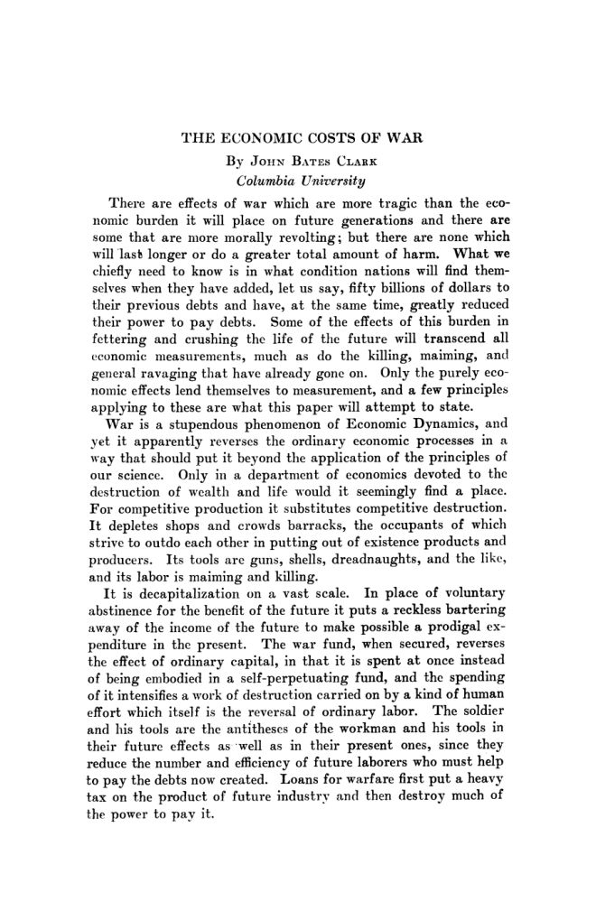

Clark, 1915: a guerra como descapitalização e o cálculo da paz
Leitura: 9 min
John Bates Clark trata a guerra como uma inversão dos processos econômicos e propõe uma fórmula para o momento em que vencedor e vencido teriam interesse em negociar a paz.


Suponha, propôs John Bates Clark, que as nações em guerra acrescentem algo como cinquenta bilhões de dólares às dívidas que já tinham e, ao mesmo tempo, reduzam muito sua capacidade de pagá-las. Em que condição estarão? Para o economista da Columbia University, havia efeitos da guerra mais trágicos e mais revoltantes que esse fardo deixado às gerações futuras, mas nenhum que durasse mais ou fizesse, no total, mais mal.
O texto, lido na sessão sobre os custos econômicos da guerra da reunião de Washington, em dezembro de 1915, não tenta medir esses custos. Clark avisa que só os efeitos puramente econômicos se prestam à medida e que pretende apenas enunciar alguns princípios que se aplicam a eles. A parte estatística ficou com William S. Rossiter, na mesma sessão.
Por que a guerra parece estar fora da economia?
Porque inverte os processos comuns. No lugar da produção competitiva, põe a destruição competitiva; esvazia oficinas e enche quartéis; suas ferramentas são canhões, granadas e encouraçados, e seu trabalho é mutilar e matar. Em vez da abstinência voluntária em benefício do futuro, troca de modo temerário a renda futura por um gasto pródigo no presente.
“É a descapitalização em vasta escala.” (“It is decapitalization on a vast scale.”)
O fundo de guerra, diz Clark, tem o efeito contrário ao do capital comum: é gasto de uma vez, em vez de se incorporar a um fundo que se perpetua. O soldado e suas ferramentas são a antítese do trabalhador e das dele, também nos efeitos futuros, porque reduzem o número e a eficiência dos trabalhadores que terão de pagar as dívidas criadas agora. Os empréstimos de guerra primeiro impõem um imposto pesado à produção futura e depois destroem boa parte da capacidade de pagá-lo.
A concorrência também se inverte. Na indústria, tentar vender mais barato que o rival é tentar servir o público melhor do que ele, e o processo obriga todos a fazer o máximo. A competição em mutilar e matar arruína o presente e o futuro. A guerra leva ao extremo o desconto dos valores futuros que ocupava tanto espaço nas teorias recentes: bens que sustentarão a vida amanhã passam a valer muito menos do que bens que a destroem hoje. Clark observa que nem Böhm-Bawerk postulou essa relação entre presente e futuro.
Então a guerra não tem lugar na ciência econômica?
Tem, responde Clark, e negá-lo seria ter uma visão estreita da ciência. Há lugar nela para as disputas privadas que definem e defendem a propriedade. Numa sociedade rude, a posse é precária e se mantém pela vigilância pessoal e por muita luta; a produção de riqueza valeria pouco se qualquer um pudesse tomar impunemente a parte do outro. Impedir que a utilidade seja anulada pelo roubo é uma operação tão econômica quanto criá-la.
Entre os indivíduos, o Estado, com tribunais, legislatura e polícia, poupa a maior parte dessa luta. Entre os Estados, não há governo eficiente, e a defesa de territórios e bens ainda se faz à maneira primitiva, com enorme destruição de vidas e de bens. A guerra pertence, assim, à divisão da economia que confere aos bens a qualidade básica da apropriabilidade. Para Clark, o enorme custo vem não de a função ser exercida, mas do modo assassino como é exercida; se as posses nacionais não tivessem proteção alguma, o mundo estaria ainda pior.
Quais custos se podem medir?
Clark trata só dos custos incorridos durante a guerra. Uns caem primeiro sobre os governos e depois sobre o povo; outros caem diretamente sobre o povo, pela paralisação da produção e pela destruição das campanhas. Medir o efeito total exigiria comparar a riqueza que os países terão ao fim do conflito com a que teriam se a acumulação da paz tivesse continuado, conta que só se pode fazer, aproximadamente, depois do fim. O que mais importa saber, diz, é em que condição as nações estarão se a luta durar mais um ano, porque é com previsões desse tipo que se decide oferecer ou aceitar a paz.
Do ponto de vista moral, e mesmo do militar, matar homens é pior do que destruir bens; num cálculo estritamente econômico, observa Clark, não necessariamente. Se a guerra reduzisse igualmente todas as classes, pelos princípios malthusianos elevaria os ganhos dos trabalhadores sobreviventes. Mas ela é seletiva: mata e incapacita os trabalhadores mais produtivos e reduz a eficiência média por habitante até que novas gerações amadureçam. Se destruísse só capital e poupasse todos os trabalhadores, o ganho individual cairia de modo ainda mais desastroso.
O maior desastre econômico futuro atribuível à guerra seriam as dívidas. Pesariam sobre os trabalhadores em parte por impostos indiretos e muito mais por impedir reformas que o trabalho já exigia. Juros, pensões de guerra e novos gastos com exércitos e marinhas absorveriam a maior parte do que os países poderiam pagar, e muitas reformas teriam de esperar. O mal, como os outros, variaria na razão direta da duração do conflito.
Há um ponto natural para terminar a guerra?
Clark procura uma fórmula, à maneira da economia, para a guerra de atrito, em que o fato decisivo é a morte e a incapacitação de homens e a destruição de recursos. Perdas iguais dos dois lados aumentam a preponderância do mais forte, e o mesmo vale para a superioridade em recursos.
Para fazer a decisão depender apenas do interesse, Clark revive um modo clássico de análise: faz de cada nação ou liga de nações um único ser quase econômico, uma enorme máquina de calcular, insensível a amor, ódio, gratidão ou vingança, para a qual a vida dos próprios cidadãos é só um custo. Ele se diz algo bárbaro por fazer a conta, mas sustenta que ela isola forças dominantes que de fato decidiriam o momento e a forma do fim da guerra.
A regra é esta. Quando o atrito revela de que lado ficará a vitória, o máximo que o vencedor provável pode pedir, por frio interesse, é tudo o que obteria levando a conquista até o fim, menos o custo de levá-la até o fim: vidas, recursos, eficiência futura. Pedir mais seria agir por raiva ou vingança. O mais fraco tem interesse em aceitar esses termos assim que oferecidos, porque cada dia de recusa reduz o desconto que o vencedor está disposto a conceder, e no último dia possível a própria sobrevivência pode deixar de estar ao seu alcance.
Numa nota, Clark lembra que na guerra, como nos negócios, se age sobre probabilidades. Um homem agiria de modo insensato se arriscasse toda a fortuna por uma chance igual de dobrá-la, porque a perda total o prejudicaria muito mais do que o ganho o beneficiaria. Uma derrota esmagadora é um mal fora de qualquer cálculo, e mesmo uma pequena probabilidade dela pesaria, numa conta fria, mais que qualquer ganho que uma guerra pudesse trazer.
O que a fórmula deixa de fora?
Tudo o que foi retirado das nações para montar a conta. Devolvidas as qualidades humanas, o vencedor moderaria os termos: a fórmula define apenas um máximo selvagem. Impulsos humanitários, a justiça, a opinião da humanidade, a atitude futura dos neutros e a boa vontade até dos vencidos pesam na decisão. Ainda assim, Clark acha que a fórmula violenta menos os fatos quando aplicada a nações do que a cidadãos de um mesmo país, porque a soberania que governa os cidadãos molda também o seu caráter.
“As nações se parecem mais com o ‘homem econômico’ do que os próprios homens.” (“Nations are more like ‘economic men’ than men are.”)
A conclusão é institucional. Dentro dos Estados, a justiça mantém a selvageria sob controle; entre eles, os freios são insuficientes na paz e desaparecem na guerra. Tudo seria diferente se houvesse um direito internacional claramente definido e geralmente respeitado, um tribunal para aplicá-lo e uma liga de nações para dar eficácia ao tribunal. Para Clark, uma mudança institucional relativamente pequena produziria uma melhora sem limites na condição da humanidade.
Na minha leitura
Na minha leitura, o texto vale pelo modo como aplica o raciocínio econômico a um objeto que parecia escapar dele. A guerra entra como uso de recursos com custo de oportunidade: o fundo de guerra que não se perpetua, o trabalhador produtivo que morre, a dívida que tira espaço das reformas. A fórmula do fim da guerra é, no fundo, um problema de barganha com informação crescente: à medida que o atrito revela o resultado provável, a faixa de acordo se desloca, e cada dia de atraso tem custo para os dois lados.
A nota sobre o risco é o ponto mais fino. Clark usa a utilidade decrescente da riqueza para mostrar por que um agente racional recusa uma aposta justa quando o que está em jogo é tudo, e transfere o argumento para as nações. É o mesmo raciocínio que fundamenta o seguro e a aversão ao risco, aplicado à decisão de entrar numa guerra.
Glossário
- Descapitalização
- destruição ou consumo do estoque de capital, em vez de sua manutenção ou aumento.
- Guerra de atrito
- guerra decidida pelo desgaste acumulado de homens e recursos.
- Desconto do futuro
- menor valor atribuído hoje a bens disponíveis só mais tarde; tema central da teoria dos juros de Böhm-Bawerk.
- Apropriabilidade
- qualidade de um bem que pode ser possuído com segurança, sem ser tomado impunemente por outro.
- Princípios malthusianos
- proposições de Malthus sobre a relação entre população e meios de subsistência; aqui, a ideia de que menos trabalhadores elevariam o ganho de cada um.
- Homem econômico
- abstração do agente que age apenas por cálculo do próprio interesse.
- Utilidade decrescente
- princípio de que cada acréscimo de riqueza traz satisfação menor que o anterior.
Fontes
- The Economic Costs of War — John Bates Clark, Columbia University (pp. 85–93). JSTOR · Internet Archive (PDF)
- Edição completa, com os demais artigos: Nº 140 do Arquivo.
Documento em domínio público (EUA, publicado antes de 1931), via JSTOR Early Journal Content e Internet Archive. Resumo e comentário do autor deste site, sem afiliação com a American Economic Association. Encontrou um erro? Escreva: a correção é publicada no próprio texto, com data.
↑ Nº 140 · Washington, 1915: o custo da guerra, o orçamento e o paradoxo do Alabama Cleveland, 1915: o orçamento como instrumento do governo visível →